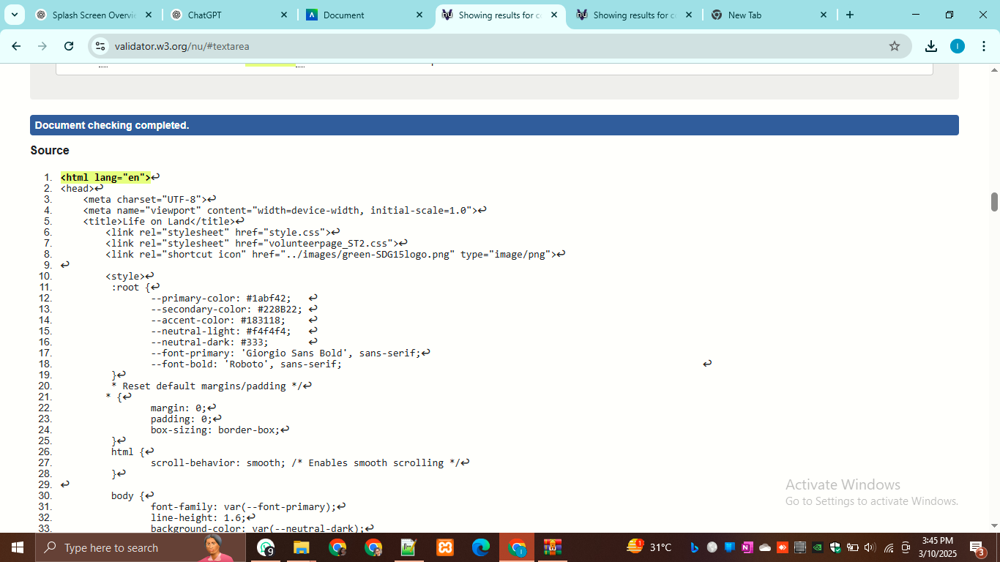
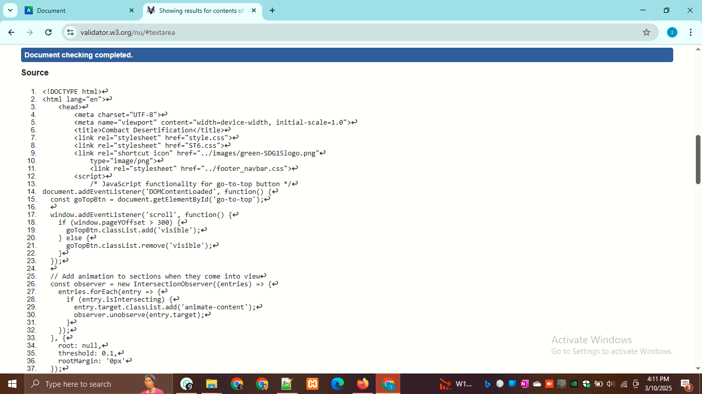

Splash screen
I designed and developed an engaging splash screen using HTML and CSS, featuring an animated logo and smooth transitions. It was optimized for performance and responsiveness, ensuring a seamless user experience across devices. The design adhered to the site’s branding guidelines for a consistent and visually appealing introduction to the website. please refer to the Validation Section of the Validation Page.
Splash screen validation
HTML Validation
These are the validation proof

Reflection of the validation Report
The splash screen was a crucial part of creating an engaging first impression for users. It combined animation and smooth transitions to captivate visitors while maintaining a lightweight design for optimal performance. Focusing on responsiveness, I ensured the splash screen functioned seamlessly across devices, providing a consistent experience for all users. By aligning the design with the site's overall branding, I was able to create a visually appealing and cohesive introduction that set the tone for the rest of the site.
Volunteer Page
The Volunteer Page was designed to create an engaging and informative space for users to explore volunteer opportunities. I focused on ensuring the layout was clear and user-friendly, with interactive elements like filters, hover effects, and a scheduling calendar. This helped users easily navigate through available roles and manage their involvement. The page was carefully aligned with the site’s overall branding and styling, ensuring consistency across the website. By prioritizing accessibility and responsiveness, I created a seamless experience for all users, encouraging active participation in volunteer activities.
please refer to the Validation Section of the Validation Page.Volunteer Page validation
HTML Validation
These are the validation proof
Reflection of the validation Report
Content Page
The Biodiversity Content Page was created to raise awareness and educate users about the significance of biodiversity in the environment. My goal was to present this important topic in an engaging and informative way, combining text with visuals to highlight key concepts and facts. I organized the content into clear, digestible sections, ensuring it was both informative and easy to please refer to the Validation Section of the Validation Page.
Content Page validation
HTML Validation
These are the validation proof
Reflection of the validation Report
I paid particular attention to accessibility, optimizing the page for different screen sizes and ensuring readability for all users. The layout was designed to be responsive, making sure it worked well on both desktop and mobile devices. By aligning the page design with the website’s global styling guidelines, I maintained consistency in the overall user experience and branding. Ultimately, the Biodiversity Content Page succeeded in making a complex topic accessible and engaging, encouraging users to explore the importance of biodiversity and its conservation.
G